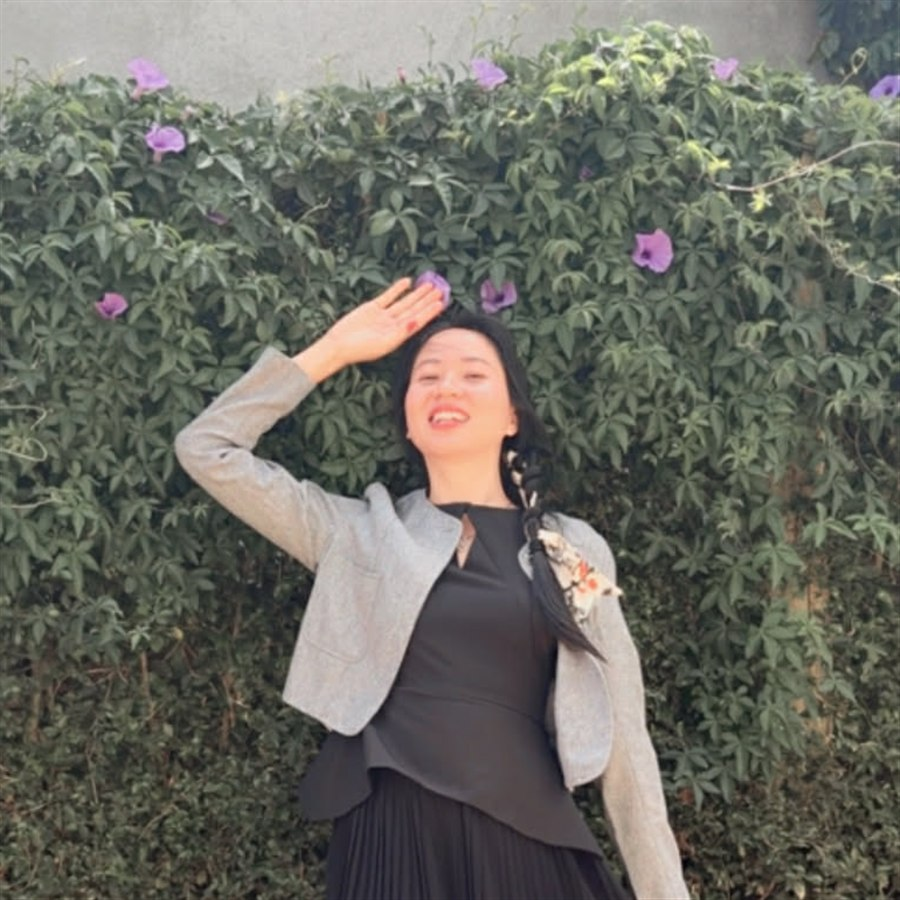
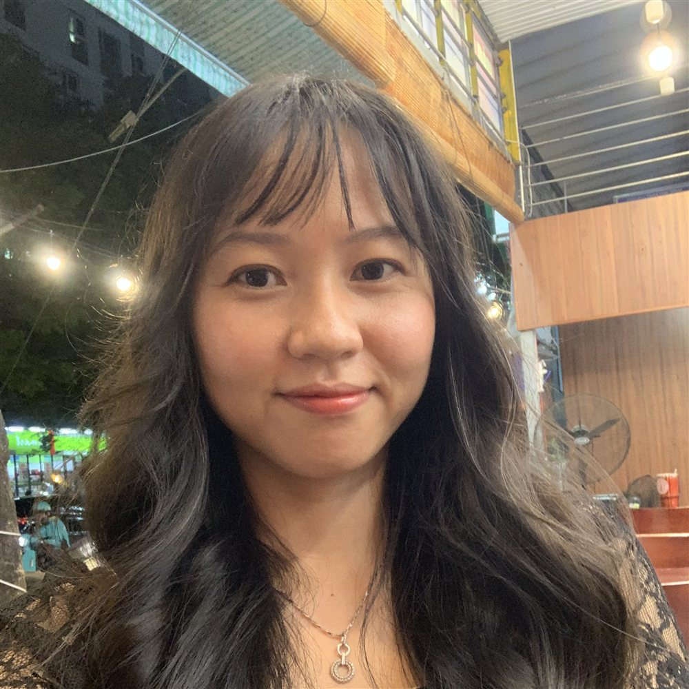

3 buổi học online chỉ cho bạn cách nhìn ra, thấu hiểu và sống đúng theo lựa chọn của chính mình. Không cần hy sinh gia đình. Không cần trở thành người ích kỷ. Kết thúc workshop, bạn cầm trong tay bản thiết kế hành động rõ ràng cho những ngày tiếp theo.

Kiểm tra xem bạn có bao nhiêu dấu hiệu dưới đây:
Nếu bạn có từ 3 dấu hiệu trở lên, cuộc sống của bạn đang cần được nhìn lại theo cách khác.
Và quan trọng nhất: đây không phải lỗi của bạn. Cũng không phải "tại có quá nhiều trách nhiệm".
Bạn không kiệt sức vì có quá nhiều trách nhiệm.
Trong nhiều năm, những niềm tin cũ đã âm thầm thay bạn đưa ra mọi lựa chọn.
Đó là lý do bạn càng cố chịu đựng giỏi hơn càng mệt. Càng học thêm mẹo quản lý thời gian càng rối. Càng cố theo cách cũ, kết quả càng kém.
Bạn không thiếu ý chí. Bạn chỉ chưa từng nhìn thấy gốc rễ đang điều khiển lựa chọn của mình.
Và đó chính xác là thứ bạn sẽ nhận được trong workshop này:
Cách tái thiết kế lựa chọn được thiết kế riêng cho phụ nữ đang kiệt sức vì luôn đặt người khác lên trước.
"Không phải chuyện tìm thêm mẹo quản lý thời gian."
Nhìn thẳng vào những gì đang thật sự làm thất thoát sức khỏe, năng lượng và thời gian của bạn mỗi ngày.
"Hiểu vì sao cảm giác có lỗi luôn xuất hiện đúng lúc."
Truy đến tận gốc niềm tin đang điều khiển lựa chọn của bạn, ngay khi bạn định chọn điều gì cho bản thân.
"Bước quyết định bạn có thực sự thay đổi được hay không."
Xây một lộ trình chuyển hóa đầu tiên, cụ thể, phù hợp với đúng hoàn cảnh sống của bạn.
Xác định chính xác 6 điểm đang làm thất thoát sức khỏe, năng lượng và thời gian của bạn mỗi ngày — thay vì mơ hồ nghĩ "chắc tại mình bận".
Gọi tên đúng niềm tin giới hạn đang khiến bạn luôn đặt bản thân sau cùng, và truy ngược từ một cảm giác có lỗi cụ thể về đúng gốc rễ của nó.
Có sẵn khung thực hành ngắn, làm được ngay trong buổi học, không cần chuẩn bị gì trước.
Rời buổi học cuối với kế hoạch cụ thể: xác định 4 cột mốc hành vi đầu tiên và cam kết một hành động thực hiện ngay trong 24 giờ.
3 buổi online qua Zoom, mỗi buổi 120 phút — tổ chức định kỳ mỗi tháng theo lịch cố định dưới đây.
Thứ Ba · 19h30 – 21h30
Điều gì đang thật sự lấy đi năng lượng của bạn
Thứ Năm · 19h30 – 21h30
Vì sao bạn luôn quay lại lựa chọn cũ, dù biết rõ điều mình cần
Thứ Ba tuần kế tiếp · 19h30 – 21h30
Phiên Thực Hành Chuyên Sâu — hoàn thiện Bản Thiết Kế Sống Theo Lựa Chọn™ V1

Kiến trúc sư · HLV Dinh Dưỡng & Wellness Coach · Họa sĩ — Người sáng lập Sống Theo Lựa Chọn™
Nhìn từ bên ngoài, tôi từng là một người phụ nữ "có tất cả". Vai trò nào tôi cũng cố làm tròn — một người vợ chu đáo, một người mẹ tận tâm, một người làm nghề với tinh thần trách nhiệm cao. Tôi tin rằng chỉ cần cố thêm một chút, hy sinh thêm một chút, thì gia đình sẽ hạnh phúc và mọi thứ rồi sẽ ổn.
Nhưng đằng sau lớp vỏ "ổn" đó là một sự thật khác. Sau khi sinh con, sức khỏe tôi xuống dốc: mất cân bằng nội tiết, tăng mỡ bụng, dị ứng, rụng tóc, và những buổi sáng thức dậy trong trạng thái mệt mỏi trước cả khi ngày mới bắt đầu. Tôi biết mình cần nghỉ ngơi, cần chăm sóc bản thân — nhưng tôi vẫn luôn chọn người khác trước. Tôi học dinh dưỡng, đổi chế độ ăn, đọc sách phát triển bản thân. Mỗi cách đều giúp tôi khá hơn một thời gian ngắn, rồi tôi lại quay về đúng lối cũ — và bắt đầu tin rằng mình thiếu kỷ luật, thiếu quyết tâm.
Bước ngoặt đến khi tôi lần đầu tiên tự hỏi một câu mà trước giờ tôi chưa từng dám hỏi: điều gì thật sự đang quyết định những lựa chọn của mình mỗi ngày — chứ không phải tôi đang thiếu kiến thức gì.
Câu hỏi đó dẫn tôi đến một nhận ra: tôi đã sống quá lâu theo những niềm tin và vai trò được hình thành từ gia đình, xã hội, quá khứ — rằng một người phụ nữ tốt phải hy sinh, rằng gia đình luôn phải đứng trước, rằng ưu tiên bản thân là ích kỷ. Chính những niềm tin đó tạo ra cảm giác có lỗi, lo lắng, sợ hãi mỗi khi tôi muốn chọn điều gì tốt cho mình — và cái vòng lặp vô thức giữa niềm tin và cảm xúc ấy mới là thứ âm thầm điều khiển mọi lựa chọn của tôi, không phải vì tôi có quá nhiều trách nhiệm.
Tôi không tiếp tục cố gắng nhiều hơn. Tôi bắt đầu thay đổi từ gốc — từ cách tôi nhìn nhận bản thân, từ những niềm tin đang dẫn dắt cảm xúc và lựa chọn hằng ngày. Tôi không còn chăm sóc bản thân vì ép buộc, mà vì hiểu đó là nền tảng để có đủ năng lượng và sự bình an cho những người mình yêu thương.
Sức khỏe tôi dần phục hồi, giấc ngủ sâu hơn, tinh thần ổn định hơn. Nhưng thay đổi lớn nhất không phải là cơ thể — mà là tôi lấy lại được quyền lựa chọn cuộc sống của chính mình.
Chính trải nghiệm đó khiến tôi nhận ra: rất nhiều phụ nữ không kiệt sức vì có quá nhiều trách nhiệm, mà vì trong nhiều năm, những niềm tin cũ đã âm thầm thay họ đưa ra mọi lựa chọn. Tôi hệ thống hóa hành trình đó thành Phương Pháp Tái Thiết Kế Cuộc Sống Theo Lựa Chọn™, và từ đó xây dựng workshop "Sống Cho Mình Mà Không Cảm Thấy Có Lỗi™" — để những người phụ nữ khác không phải mất nhiều năm loay hoay như tôi mới chạm được đến gốc rễ vấn đề.
Gồm tất cả quyền lợi của vé tiêu chuẩn, cộng thêm:
Workbook và bài tập của Buổi 1 & Buổi 2 được cung cấp cho toàn bộ học viên. Vé VIP không bán tài liệu — mà mang đến trải nghiệm thực hành chuyên sâu, cá nhân hóa và đồng hành để giúp bạn tạo ra kết quả thực tế.
Giá VIP giữ nguyên 99K — mức giá cố tình thấp để xóa rào cản tiếp cận, không phải để tối đa doanh thu.
Nếu bạn tham gia đầy đủ Phiên Thực Hành Chuyên Sâu™, hoàn thành các bài tập thực hành theo hướng dẫn, mà vẫn cảm thấy workshop không mang lại giá trị như cam kết — bạn được hoàn lại 100% giá Vé VIP trong vòng 7 ngày kể từ ngày kết thúc workshop.
Bạn đã sống vì người khác nhiều năm rồi.
3 buổi tối này là dành cho bạn.
Hẹn gặp bạn trong workshop.